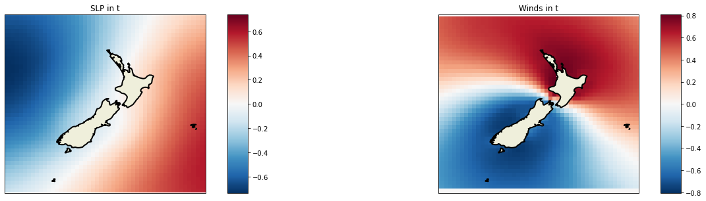
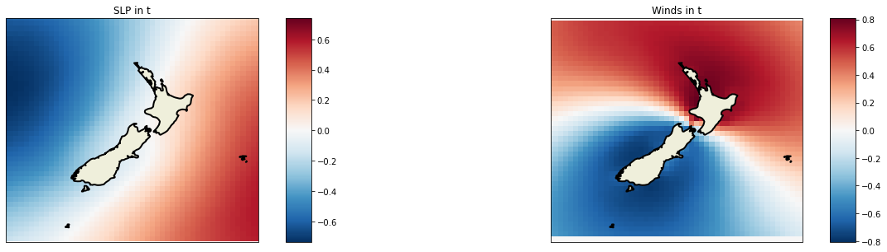

PC analysis
Contents
4. PC analysis¶
4.1. Principal Components Analysis theory¶
In this notebook, the Principal Component Analysis (PCA) is performed. With this dimensionality reduction technique we are able to reduce the dimension of the data, which in the case of a regional predictor for the sea-level-pressure fields, exceeds the thousands of variables… All the python code is hosted at sscode/pca.py, where we use the scikit-learn package available here.
Regarding the maths, an explanation of what PCA is can be found at wikipedia (many other sources explain this technique in detail), but it will be briefly explained here too.
The PCA reduces the dimension of the data by means of a projection in a lower dimensional space that preserves the maximum variance of the sample data. The new vectors are formed by the ones where the projected data have the higher variance. Given the spatiotemporal variable \(X_i (x, t_i)\), where \(x\) is the spatial data position of dimension \(3n1 + 2n2\) and \(t_i\) is the time, we apply PCA to obtain a new \(d\)-dimensional space. The eigenvectors [empirical orthogonal functions (EOFs)] of the covariance matrix of the data define the vectors of the new space. The idea of PCA is to find the minimum \(d\) linearly EOFs, so that the transformed components of the original data [principal components (PCs)] explain the maximum variance necessary in the problem at hand. The original data can be expressed as a linear combination of EOFs and PCs,
Once we apply PCA, our data are defined by the principal components \(X_i^{EOF}={PC_1,PC_2,...,PC_d}, i=1,...,P \). A better online explanation can be also found here!!

Fig. 4.1 This picture shows how the dimensionality reduction that performs PCA might help when identifying patterns in data (image reference)¶
{kind=link}
4.2. Import python libraries¶
The very first step in all the notebooks we are using consists in importing all the necessary libraries.
# basics
import os, sys
# append sscode to path
sys.path.insert(0, os.path.join(os.path.abspath(''), '..'))
# custom
from sscode.data import Loader, load_moana_hindcast_ss
from sscode.pca import PCA_DynamicPred
from sscode.config import default_region_reduced, default_location
# warnings
import warnings
warnings.filterwarnings('ignore')
DATA PATH /home/javitausia/Documentos/geocean-nz-ss/data
4.3. Load the data without plotting¶
As always, we first load the data using our Loader python class, so then we can easily use all the datasets. Notice that here, we set the plot parameters to False.
# load the data from pre-saved files
load_cfsr_moana_uhslc = Loader(
load_predictor_files=(
True,['../data/cfsr/CFSR_MSLP_daily.nc','../data/cfsr/CFSR_WINDs_daily.nc']
), plot=(False,False,False)
)
loading previously saved atmospheric data from (True, ['../data/cfsr/CFSR_MSLP_daily.nc', '../data/cfsr/CFSR_WINDs_daily.nc'])
loading the Moana v2 hindcast data...
loading the UHSLC tidal guages...
4.4. PCA usage explanation¶
To use the pre-build PCA functions, the user must get familiar with the datasets and the way everything is programmed.
Tip
For this reason, have always in mind that xarray will be the main python data analysis library used in the project, and then, python functions will usually depend on these Datasets / DataArrays, which are very useful when working with multiple dimensions and variables
Regarding the PCA usage, have a look at the class in sscode/pca.py as this is the aspect of all the functions that are used. For this particular case, we must give the function the previouly loaded slp fields, which are stored at load_cfsr_moana_uhslc.predictor_slp, and then specify the actions that we want to perform over this raw dataset.
4.4.1. PCA code¶
Below, the attributes of the PCA class are shown, so its use is easier:
class PCA_DynamicPred(object):
def __init__(self,
pres,
pres_vars: tuple = ('SLP','longitude','latitude'),
calculate_gradient: bool = False,
wind = None,
wind_vars: tuple = ('wind_proj_mask','lon','lat','U_GRD_L103','V_GRD_L103'),
# here we could make use of datasets_attrs in config.py file
time_lapse: int = 1, # 1 equals to NO time delay
time_resample: str = '1D',
region: tuple = (True,default_region_reduced),
# ss_site: tuple = (False, None),
site_location = None,
pca_plot: tuple = (True,False,2),
verbose: bool = True,
pca_ttls = None,
pca_borders = None,
pcs_folder = None,
site_id = None,
pca_percent = 0.99,
pca_method = 'cpu'):
so a use case might be:
pca_example = PCA_DynamicPred(
load_cfsr_moana_uhslc.predictor_slp.SLP, # make sure we use the dataarray, NOT dataset
calculate_gradient=True,
wind=load_cfsr_moana_uhslc.predictor_wind,
time_lapse=2, # frame in t and t-1
time_resample='1D', # daily resampling
region=(True,(150,160,-40,-30)),
site_location=(155,-45),
# ...
# ...
)
4.5. PCA examples:¶
Below, different PCA analysis with different inputs are shown:
Warning
Be careful when trying to perform the PC Analysis over large amounts of data, as it works inversing the matrices of the data, and depending on the computer features, the kernel might die!!
4.5.1. Regional PCs analysis¶
pcs_data, pcs_scaler = PCA_DynamicPred(
load_cfsr_moana_uhslc.predictor_slp.SLP,
calculate_gradient=False,
wind=load_cfsr_moana_uhslc.predictor_wind,
time_lapse=1, # 1 equals to NO time delay
time_resample='1D', # daily resampling
region=(True,default_region_reduced),
site_location=default_location,
pca_plot=(True,False,2),
pca_ttls=('SLP in t','Winds in t'),
).pcs_get() # look the simplicity of the function
Assembling matrix
Start 0
adding the wind to the predictor...
winds predictor with shape:
(11354, 45, 51)
calculating PCs matrix with shape:
(11353, 4590)
Computing using CPU
matrix (11353, 4590)
PCs (11353, 4590)
comp (4590, 4590)
var (4590,)
lon <xarray.DataArray 'longitude' (longitude: 51)>
array([160. , 160.5, 161. , 161.5, 162. , 162.5, 163. , 163.5, 164. , 164.5,
165. , 165.5, 166. , 166.5, 167. , 167.5, 168. , 168.5, 169. , 169.5,
170. , 170.5, 171. , 171.5, 172. , 172.5, 173. , 173.5, 174. , 174.5,
175. , 175.5, 176. , 176.5, 177. , 177.5, 178. , 178.5, 179. , 179.5,
180. , 180.5, 181. , 181.5, 182. , 182.5, 183. , 183.5, 184. , 184.5,
185. ], dtype=float32)
Coordinates:
* longitude (longitude) float32 160.0 160.5 161.0 161.5 ... 184.0 184.5 185.0
lat <xarray.DataArray 'latitude' (latitude: 45)>
array([-52. , -51.5, -51. , -50.5, -50. , -49.5, -49. , -48.5, -48. , -47.5,
-47. , -46.5, -46. , -45.5, -45. , -44.5, -44. , -43.5, -43. , -42.5,
-42. , -41.5, -41. , -40.5, -40. , -39.5, -39. , -38.5, -38. , -37.5,
-37. , -36.5, -36. , -35.5, -35. , -34.5, -34. , -33.5, -33. , -32.5,
-32. , -31.5, -31. , -30.5, -30. ], dtype=float32)
Coordinates:
* latitude (latitude) float32 -52.0 -51.5 -51.0 -50.5 ... -31.0 -30.5 -30.0
time (11353,)
plotting 2 components with 2 EOFs + PC...
being the EOFs the slp, the gradient, in steps t, t-1

 


4.5.2. Local PCs analysis¶
pcs_data, pcs_scaler = PCA_DynamicPred(
load_cfsr_moana_uhslc.predictor_slp.SLP,
calculate_gradient=True,
wind=load_cfsr_moana_uhslc.predictor_wind,
time_lapse=1, # 1 equals to NO time delay
time_resample='1D', # daily resampling
region=(True,(175,180,-40,-35)),
site_location=(177,-36),
pca_plot=(True,False,2),
pca_ttls=('SLP in t','Gradient in t','Winds in t'),
).pcs_get() # look the simplicity of the function
Assembling matrix
Start 0
adding the wind to the predictor...
winds predictor with shape:
(11354, 11, 11)
calculating the gradient of the sea-level-pressure fields...
pressure/gradient predictor both with shape:
(11354, 11, 11)
calculating PCs matrix with shape:
(11353, 363)
Computing using CPU
matrix (11353, 363)
PCs (11353, 363)
comp (363, 363)
var (363,)
lon <xarray.DataArray 'longitude' (longitude: 11)>
array([175. , 175.5, 176. , 176.5, 177. , 177.5, 178. , 178.5, 179. , 179.5,
180. ], dtype=float32)
Coordinates:
* longitude (longitude) float32 175.0 175.5 176.0 176.5 ... 179.0 179.5 180.0
lat <xarray.DataArray 'latitude' (latitude: 11)>
array([-40. , -39.5, -39. , -38.5, -38. , -37.5, -37. , -36.5, -36. , -35.5,
-35. ], dtype=float32)
Coordinates:
* latitude (latitude) float32 -40.0 -39.5 -39.0 -38.5 ... -36.0 -35.5 -35.0
time (11353,)
plotting 2 components with 3 EOFs + PC...
being the EOFs the slp, the gradient, in steps t, t-1